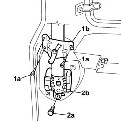
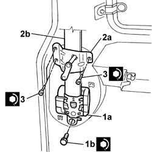

7065B10 l/h or r/h rear safety belt (one) - r+r
- Path
- Procedures > 70 FITTINGS > 7065 SEAT BELTS AND ACCESSORIES > 7065B rear safety belts > 7065B10 l/h or r/h rear safety belt (one) - r+r
- Kind
- repair procedure (removal / refitting; the operation number is the code)
- Applies to
- all engines; all production periods
- Interactive page
- https://sloeber94.github.io/elrnDB-fDbl/en/#/2585231
Applies to: all engines; all production periods; only with equipment: Doblò trim level
 Removing
Removing
 Refitting
RefittingOp. 7040H80 REAR PARCEL SHELF - R.R.
Op. 7040H42 REAR PILLAR TRIM (ONE), LEFT OR RIGHT- R.R
1. Undo the fixing bolts (1a) and remove rear seat striker (1b).
2. Undo bolt (2a) and remove rear seat belt reel (2b).

Applies to: all engines; all production periods; only with equipment: Doblò trim level
Refitting
Removing1. Fit rear seat belt reel (1a) and tighten bolt (1b) to torque.
 | Fastening | Component | Ø | Value (daNm) |
|---|---|---|---|---|
- | Bolt | REAR SEAT BELT REEL. | - | 4.0 |
2. Fit rear seat striker (2a) and place seat belt (2b) between the pillar and striker.
3. Tighten the rear seat striker retaining bolts to torque.
| Fastening | Component | Ø | Value (daNm) |
|---|---|---|---|---|
3 | Bolt | REAR SEAT BELT REEL. | M8 | 2.4 |

Applies to: all engines; all production periods; only with equipment: Doblò trim level